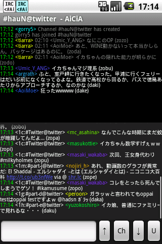

AiCiA
AiCiAをご利用いただき、ありがとうございます。本ページは、「AiCiA - Android IRC Client」のヘルプトップページとなります。
目次
| 特長 |
AiCiAの特長を説明します。 |
| メイン画面 |
AiCiAの起動方法と、メイン画面の使用方法を説明します。 |
| 操作方法 |
AiCiAでIRCサーバに接続した後の操作方法を説明します。 |
| IRCモード |
AiCiAでIRCを行うときに扱う「IRCモード」の操作方法を説明します。 |
| TIGモード |
AiCiAでTwitterを扱う「TIGモード」の操作方法を説明します。 |
| サーバの設定 |
AiCiAで接続するIRCサーバの設定方法を説明します。 |
| チャンネル |
AiCiAで接続したIRCサーバ内の各チャンネル動作の設定方法を説明します。 |
| 環境設定 |
AiCiAの動作環境の設定方法を説明します。 |
| よくある質問 |
AiCiAについてよくある質問をまとめたものです。 |
| ライセンス |
AiCiAのライセンスについて説明します。 |
コメントを受け付けています。
更新履歴
- 2023.0826.1
-
- Android OS13に対応（および、minSdkVersionを22(OS5.1)に変更）。
- 一部IMEで「Enter入力による送信」ができなかったのを改善。このため入力エリアが「１行入力＋横スクロール」になるが、設定で元の動作に戻すこともできる。
- 2018.0410.2
-
- Android Studio用にプロジェクトを再構成。
- OS8.0に対応（および、minSdkVersionを14(OS4.0)に変更）。
- 2015.0314.1
-
- キーワード通知をOSシステム通知化できるようにしました。
- OS5.0におけるoom killer耐性を改善しました。
- ログウィンドウが縦分割配置のとき、ダブルタップで意図した移動にならないことがあったバグを再度修正しました。
- 2014.1114.2
-
- サーバ設定を終了するときに接続状態が異常になることがあったのを修正しました。
- 自動再接続が正常に動作していなかったのを修正しました。
- 2014.1114.1
-
- OS5.0でサーバ編集時にエラーが発生して落ちるのを修正しました。
- SSLでの接続時、IRCサーバへのテキストやコマンド送信が失敗することがあったのを修正しました。
- IRCサーバやチャンネル設定の変更が反映されないことがあったのを修正しました。
- [接続]ボタンの連打でエラーが発生して落ちることがあったのを修正しました。
- 2014.1106.2
-
- Android OS5.0に対応しました。
- メニューボタンの位置をシステムバーからアクションバーに変更しました。このため、OS3.0以降では「タイトルバーを消す」が使用できなくなります。
- 2012.1224.1
-
- 横画面時にチャンネル選択ダイアログのレイアウトが正しくなくなっていたのを修正しました。
- 2012.1216.1
-
- PART（チャンネルから出る）時のメッセージ出力が、チャンネル側でなくシステム側に出ていたのを修正しました。
- サーバ設定・チャンネル設定ダイアログに[システムメッセージをサブログにも出力]を追加しました。
- ウィンドウの縦スライドでスクロールを始めたあとは、指を離すまで横スライド判定（チャンネル移動）をしないようにしました。
- チャンネル選択ダイアログでサーバボタンを長押ししたとき、そのサーバのシステムチャンネルへ移動するようにしました。
- [更新/通知チャンネルの一覧]ダイアログのリストをボタン付きに変更しました。
- [更新/通知チャンネルの一覧]ダイアログで、「更新/通知のクリア」をリスト先頭へ移動しました。
- CTCP-queryを含む行をシステムメッセージ扱いにするようにしました。現時点ではCTCP-queryに対する反応を行いません。
- 2012.1008.1
-
- Android2.3以降の端末で、画面の上下反転に対応しました。
- コマンドボタンの大きさを変更できるようにしました。
- 2012.0220.1
-
- Android3.0以降の端末で、[アプリ一覧の編集]・[ウェブサイト一覧の編集]がダイアログが正常に開かない症状に対応しました。
- [チャンネルの一覧]ダイアログが横画面で表示されるとき、サーバボタンの縦幅分しか一覧が表示されなかったのを修正しました。
- 2012.0211.1
-
- ログウィンドウが縦分割配置のとき、ダブルタップで意図した移動にならないことがあったバグを修正しました。
- IRCコマンドの処理方法を変更し、より意図した結果が得られるようにしました。
- 2012.0117.1
-
- ログウィンドウのダブルタップで、ウィンドウ内のテキスト先頭／末尾への移動が可能になりました。
- 「IRCサービスの強制停止」が発生した場合、その後のIRCサービス再起動時に「接続されていたIRCサーバ」へ自動再接続を行うようにしました。
- ログウィンドウを縦分割しているとき、分割比率が設定通りにならないことがあったバグを再度修正しました。
- ログウィンドウ左右フリックでのチャンネル変更が正常に動作しないことがあったバグを修正しました。
- 環境設定のインポート後、アプリケーションの強制停止を行うまで正常動作しないことがあったバグを修正しました。
- 2011.0622.1
-
- ログウィンドウのレイアウトで、メインログとサブログの位置を入れ替えることが可能になりました。
- ステータスバー・タイトルバーを非表示にすることが可能になりました。
- ログウィンドウを縦分割しているとき、分割比率が設定通りにならないことがあったバグを修正しました。
- AiCiAの[アプリ]メニューに登録したアプリをシステムから削除すると、[アプリ]メニュー表示時にAiCiAが不正終了するバグを修正しました。
- 2011.0613.1
-
- ログウィンドウの長押し（ロングタップ）で、チャンネル移動やコマンド発行などの作業が可能になりました。
- チャンネル選択ダイアログで、サーバを選択できるショートカットボタンを追加しました。
- 各種設定をSDカードなどへバックアップできるようにしました。
- 2011.0306.1
-
- 「チャンネル設定の編集」機能をカットしてしまっていたのを復活しました。
- 2011.0227.1
-
- ログウィンドウのフォント変更・行間変更を可能にしました。
- 表示中はスリープモードに入らない設定ができるようになりました。
- パスワード付きのチャンネルにJoinできるようになりました。
- IRCサーバに接続していないときに環境設定を行うと、異常終了することがあったバグを修正しました。
- 2011.0123.1
-
- 通知キーワードで鳴る音声を変更しました。
- 通知キーワードによる通知の一覧を、システムチャンネルのログで確認できるようにしました。
- [Ch]ボタンの長押し（ロングタップ）を「通知チャンネルの一覧」に変更できるようにしました。
- チャンネルリストで表示される一覧で、チャンネルの状態を表示するようにしました。
- 入力履歴を参照して、再入力できるようにしました。
- 英語リソースの全メッセージの翻訳を完了しました。
- 2011.0107.1
-
- [A]（アプリ）・[W]（ウェブサイト）を新しいコマンドボタンとして設置できるようになりました。
- 必要なコマンドボタンだけを表示することができるようになりました。
- 通知キーワードを含む行を強調表示するかどうかが選択可能になりました。
- IRCメニューに[オペレータ権限を得る(/oper)]を追加しました。
- IRCチャンネル名として"!!channel"・"+channel"形式を正しく受け付けられるようになりました。